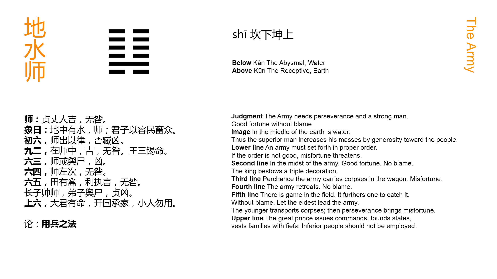

Chinese: 师 ䷆ shī

Shī ䷆ indicates how, in the case which it supposes, with firmness and correctness, and (a leader of) age and experience, there will be good fortune and no error.
1. The first SIX, divided, shows the host going forth according to the rules (for such a movement). If these be not good, there will be evil.
䷆ changing to ䷒
Matching Line 1 in Adjacent Hexagram: ䷇
2. The second NINE, undivided, shows (the leader) in the midst of the host. There will be good fortune and no error. The king has thrice conveyed to him the orders (of his favour).
䷆ changing to ䷁
Matching Line 2 in Adjacent Hexagram: ䷇
3. The third SIX, divided, shows how the host may, possibly, have many inefficient leaders. There will be evil.
䷆ changing to ䷭
Matching Line 3 in Adjacent Hexagram: ䷇
4. The fourth SIX, divided, shows the host in retreat. There is no error.
䷆ changing to ䷧
Matching Line 4 in Adjacent Hexagram: ䷇
5. The fifth SIX, divided, shows birds in the fields, which it will be advantageous to seize (and destroy). In that case there will be no error. If the oldest son leads the host, and younger men (idly occupy offices assigned to them), however firm and correct he may be, there will be evil.
䷆ changing to ䷜
Matching Line 5 in Adjacent Hexagram: ䷇
6. The topmost SIX, divided, shows the great ruler delivering his charges, (appointing some) to be rulers of states, and others to undertake the headship of clans; but small men should not be employed (in such positions).
䷆ changing to ䷃
Matching Line 6 in Adjacent Hexagram: ䷇
The conduct of military expeditions in a feudal kingdom, and we may say, generally, is denoted by the hexagram Shī ䷆. Referring to Appendixes I and II for an explanation of the way in which the combination of lines in it is made out to suggest the idea of an army, and that idea being assumed, it is easy to see how the undivided line in the second place should be interpreted of the general, who is responded to by the divided line in the fifth and royal place. Thus entire trust is reposed in him. He is strong p. 73 and correct, and his enterprises will be successful. He is denominated kang zăn, 'an old, experienced man.'
'The rules,' it is said, 'are twofold; -- first, that the war be for a righteous end; and second, that the manner of conducting it, especially at the outset, be right.' But how this and the warning in the conclusion should both follow from the divided line being in the first place, has not been sufficiently explained.
How line 2 comes to be the symbol of the general in command of the army has been shown above on the Tuàn. The orders of the king thrice conveyed to him are to be understood of his appointment to the command, and not of any rewards conferred on him as a tribute to his merit. Nor is stress to be laid on the 'thrice.' 'It does not mean that the appointment came to him three times; but that it was to him exclusively, and with the entire confidence of the king.'
The symbolism of line 3 is very perplexing. P. Regis translates it: -- 'Milites videntur deponere sarcinas in curribus. Male.' Canon McClatchie has: -- 'Third-six represents soldiers as it were lying dead in their baggage carts, and is unlucky.' To the same effect was my own translation of the paragraph, nearly thirty years ago. But the third line, divided, cannot be forced to have such an indication. The meaning I have now given is more legitimate, taken character by character, and more in harmony with the scope of the hexagram, The subject of line 2 is the one proper leader of the host. But line 3 is divided and weak, and occupies the place of a strong line, as if its subject had perversely jumped over two, and perched himself above it to take the command. This interpretation also suits better in the 5th paragraph.
Line 4 is weak and not central; and therefore 'to retreat' is p. 74 natural for its subject. But its place is even, and proper for a divided line; and the retreat will be right in the circumstances.
In line 5 we seem to have an intimation of the important truth that only defensive war, or war waged by the rightful authority to put down rebellion and lawlessness, is right. 'The birds in the fields' symbolise parties attacking for plunder. The fifth line symbolises the chief authority, -- the king, who is weak, or humble, and in the centre, and cedes the use of all his power to the general symbolised by line 2. The subject of 2 is 'the oldest son.' Those of three and four are supposed to be 'the younger brother and son,' that is, the younger men, who would cause evil if admitted to share the command.
The lesson on the topmost line is true and important, but the critics seem unable to deduce it from the nature of the line, as divided and in the sixth place.